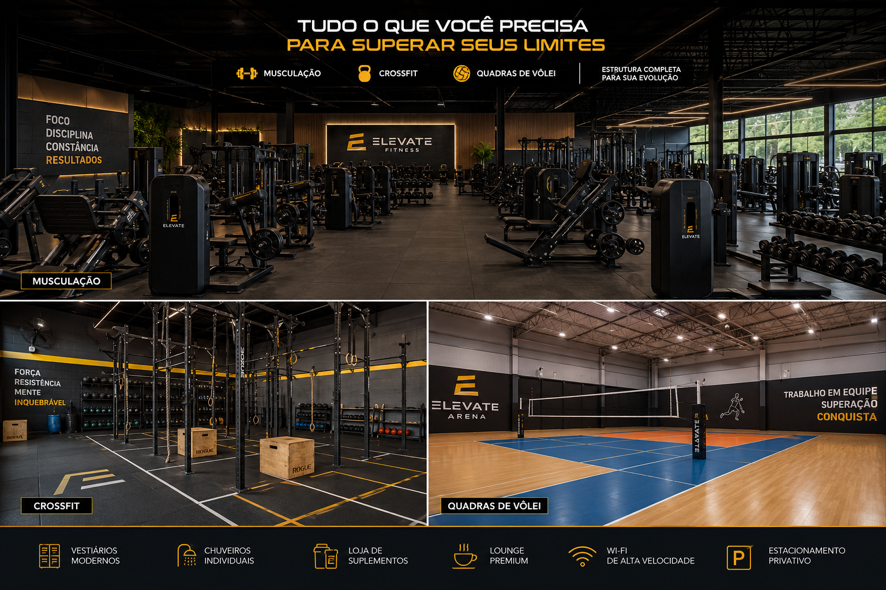

A nossa academia é equipada com equipamentos de ultima geração, perfeito para o seu treino!! Também temos quadras para a prática esportiva do voleibol, para você e seus familiares poderem se divertir ao máximo!
Além disso, contamos com uma equipe de profissionais altamente qualificados, prontos para te ajudar a alcançar seus objetivos de forma segura e eficiente. Venha fazer parte da nossa comunidade fitness e descubra o seu potencial máximo!
Estamos localizados em um local de fácil acesso, com estacionamento disponível para nossos clientes. Venha nos visitar e experimente a nossa academia por si mesmo!
A seguir, veja uma pequena imagem das nossas estruturas:

.jpg.jpeg)
.jpg.jpeg)